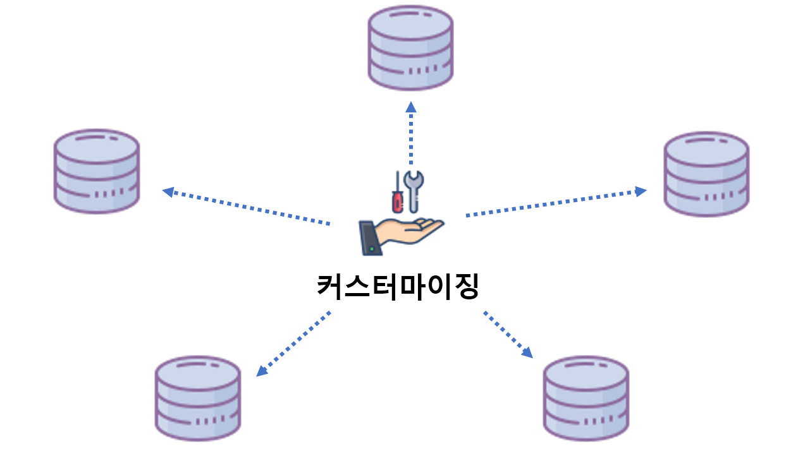
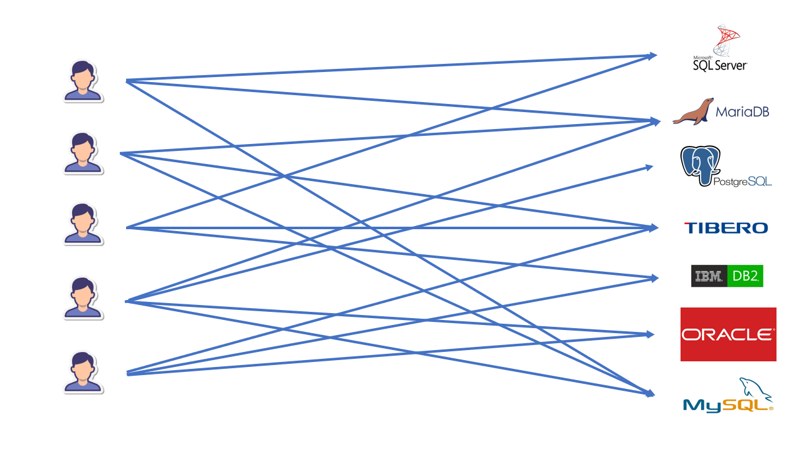

Big2Core
기존시스템의 커스터마이징으로 인한
관리비용 문제

One System One DB

하나의 시스템으로 커스터마이징 효과를 내어서
관리비용을 효과적으로 절감할 수 있습니다.

기존 DB시스템의 문제
사용자수와 DBMS 수 증가로 인한
전체 통합 정보 추출 불가 문제발생
DataSuite(데이터 통합 관리 시스템)이용
전사의 다양한 DB 데이터를 DB 유형과 상관없이 사용자가 DB에 직접 접속하지 않고 쉽고 안전하게 사용할 수 있도록 지원하는 툴입니다.
누구나 쉽게 설치없이 사용이 가능합니다.
설치형이 아닌 Web 기반 서비스형 데이터 관리
어떠한 환경에서도 복잡한 설치 없이 사용할 수 있습니다.
DB클라이언트를 설치하지 않고 was를 이용한 전체적인 데이터 관리가 가능합니다.
Big2Core가 더 궁금하신가요?